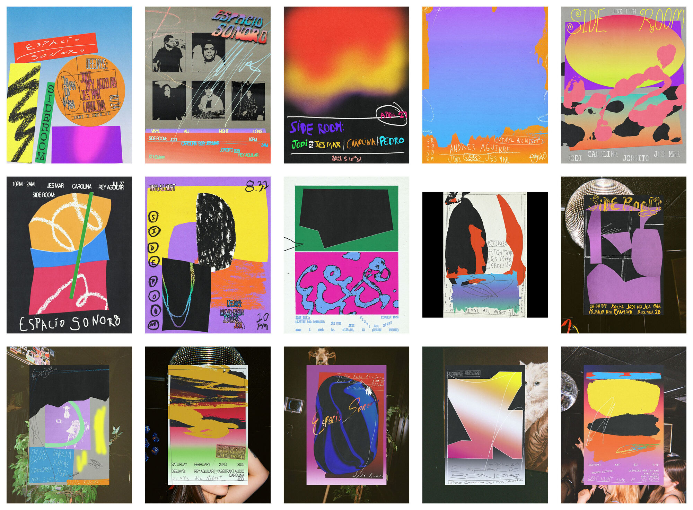
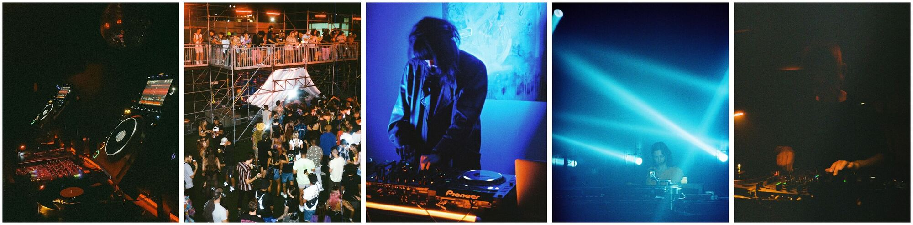
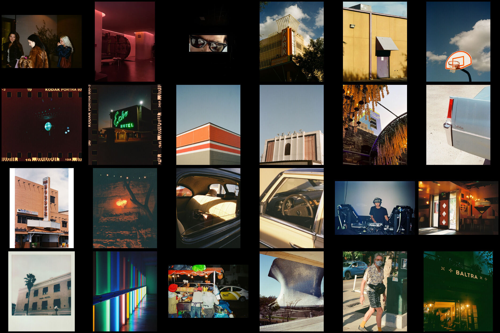
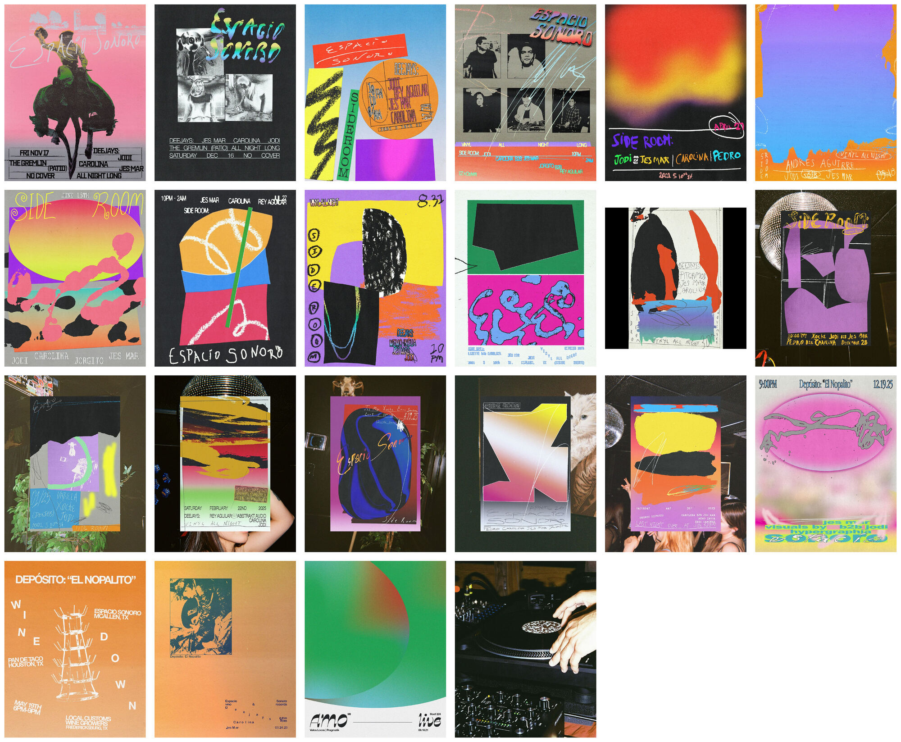

Four sheets made from the archive. They are printed here as plates, not as a layout: each one is a single image, so it can be pulled, printed, or pinned.
Sheet 01
Poster season — fifteen flyers, five across, white ground, equal cells.

Poster season, Side Room February 2024 to May 2025
Sheet 02
Night strip — five frames joined left to right, white splice, one height.

A night, in five frames Decks, floor, guest, lights, room
Sheet 03
Film contact — twenty-eight frames, six across, black ground, film-sleeve gutters.

Contact print Texas, Mexico, and the road
Sheet 04
Full wall — every flyer including the Gremlin and Nopalito years.

The whole run 2023 to 2025